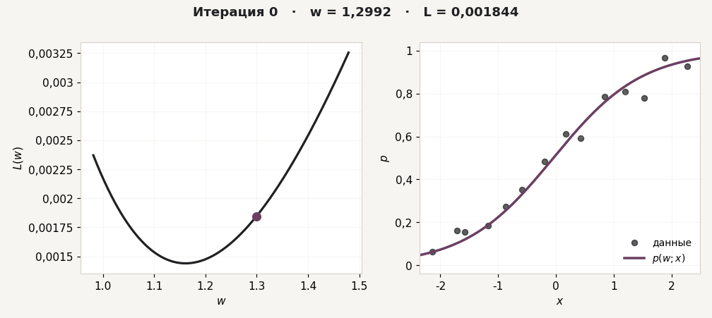

Математический анализ · ЛР 1
Вариант лабораторной
Введите номер ИСУ. Генератор определит вариант и подготовит файл с исходными данными для тетради.
Сейчас показан тестовый вариант 0. Для студентов: \(v=(\mathrm{ИСУ}\bmod 200)+1\). Для проверки страницы можно ввести 0.
Тестовый вариант 0 пример
- Точка разложения
- Радиусы окрестностей
- Радиус для оценки остатка
- Интервал для стационарной точки
На этом интервале находится одна стационарная точка. Сначала найдите её по полиному \(T_3\), затем сравните с численным решением \(f'(x)=0\).
Функция и полиномы Тейлора на широкой окрестности.
Настройка параметра
- Фиксированный параметр \(b\)
- Начальное значение \(w_0\)
- Шаги \(\eta\)
- Число итераций
- Шаги \(h\)
Данные
Наблюдения \((x_i,y_i)\) для последней части работы.

Градиентный спуск
Пример для варианта 0. Слева видно движение параметра по графику \(L(w)\), справа — как при этом меняется кривая \(p(w;x)\). Такая же анимация строится готовой функцией в тетради.